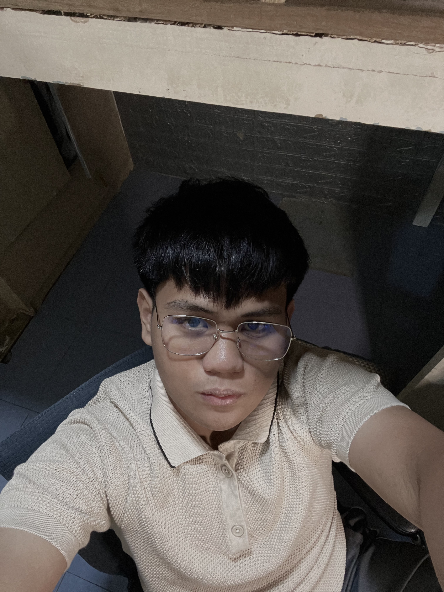

All About Me
Hello, World! I am a 20-year-old IT student currently residing in the province of Bulacan. Born on the 21st of September, in a nutshell, I am an ambivert, easygoing, and goal-setter type of person. I live by the saying, "The difference between being good and great is just a little extra effort."
I am committed to continuous learning and the principle of innovating with purpose. My goal is to create software solutions that genuinely help people. With a background in leadership, peer service, and active participation in academic organizations, I bring a balanced perspective of leading and collaborating to any team.
Get In Touch
- Phone: 0919 647 2563
- Email: karlandrewdeleon7@gmail.com
- Facebook: Karl Andrew De Leon